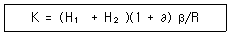
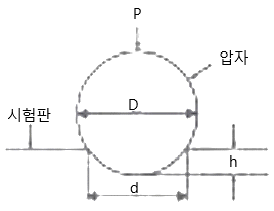

에너지관리기능장 (2015-07-19 기출문제)
1과목: 임의 구분
1. 보일러 집진방법 중 함진가스에 선회운동을 주어 분진입자에 작용하는 원심력에 의하여 입자를 분리하는 것은?
- 중력하강법
- 관성법
- 사이클론법
- 원통여과법
(정답률: 91%)

2. 스팀트랩 중 기계식 트랩으로서 증기와 응축수 사이의 부력차이에 의해 작동되는 타입으로 에어벤트가 내장되어 불필요한 공기를 제거하도록 되어 있으며 응축수가 생성되는 것과 거의 동시에 배출시크는 트랩은?
- 플로트식 증기트랩
- 써모다이나믹 증기트랩
- 온도조절식 증기트랩
- 버켓트식 증기트랩
(정답률: 78%)
3. 지역난방 서브-스테이션(Sub-station)시스템의 중계 방식으로 가장 거리가 먼 것은?
- 직접방식
- 간접방식
- 브리드 인 방식
- 열 교환기 방식
(정답률: 62%)
4. 보일러 용량 표시 방법으로 틀린 것은?
- 정격출력
- 상당 증발량
- 보일러 마력
- 과열기 면적
(정답률: 81%)
5. 보일러의 증기난방 시공에 대한 설명으로 틀린 것은?
- 온수의 온도 상승으로 인한 체적 팽창에 의한 보일러의 파손을 방지하기 위한 팽창 탱크를 설치한다.
- 진공 환수방식에서 방열기의 설치위치가 보일러보다 아래쪽에 설치된 경우 적용되는 이음방식을 리프트 피팅이라 한다.
- 증기관과 환수관을 연결한 밸런스 관을 설치하며 안전 저수위면 위쪽으로 환수관을 설치하는 배관방식은 하트포드 접속법이다.
- 증기 공급관의 관말부의 최종 분기 이후에서 트랩에 이르는 배관은 여분의 증기가 충분히 냉각되어 응축수가 될 수 있도록 보온 피복을 하지 않은 나관 상태로 1.5m 이상의 냉각래그를 설치한다.
(정답률: 59%)
6. 온도조절식 증기트랩의 종류가 아닌 것은?
- 벨로즈식
- 바이메탈식
- 다이어프램식
- 버켓식
(정답률: 80%)
7. 일반적인 연소에 있어서 이론 공기량 Ao, 실제 공기량이 A 일 때, 공기비 m을 구하는 식은?
- m = (Ao/A) - 1
- m = (Ao/A) + 1
- m = Ao/A
- m = A/Ao
(정답률: 67%)
8. 연소장치에 대한 설명으로 틀린 것은?
- 윈드박스는 공기흐름을 적절히 유지하며 동압을 정압상태로 바꾸어 착화나 화염을 안정시키는 장치이다.
- 컴버스터(combustor)는 저온의 노에서도 연소를 안정시켜 분출흐름의 모양을 안정시킨 장치이다.
- 유류버너의 고압기류식 버너는 연료자체의 압력에 의해 노즐에서 고속으로 분출시켜 미립화시키는 버너이다.
- 유류버너에서 비환류형 버너는 연소량이 감소하는 경우에는 와류실의 선회력이 감소하여 분무특성이 나빠지는 결점이 있다.
(정답률: 61%)
9. 아래의 식을 이용하여 보일러 용량 계산 시 다음 중 옳은 것은? (단, H1은 난방부하를 나타낸다.)

- ∂ : 발열량
- H2 : 예열부하
- β : 여력계수
- R : 출력상승계수
(정답률: 66%)
10. 기수분리기를 설치하는 목적으로 가장 적절한 것은?
- 폐증기를 회수, 재사용하기 위해서
- 발생된 증기 속에 남은 물방울을 제거하기 위해서
- 보일러에 녹아있는 불순물을 제거하기 위해서
- 과열증기의 순환을 되돌고 빨리 하기 위해서
(정답률: 83%)
11. 증기난방에 대한 설명으로 옳은 것은?
- 증기를 공급하여 증기의 전열을 이용하여 가열하므로 에너지비용이 적게 든다.
- 증기난방에서는 응축수의 열도 이용하므로 응축수를 회수하지 않아도 된다.
- 중력환수식 증기난방에서 응축수를 회수할 때는 응축수탱크가 방열기보다 높은 위치가 있다.
- 응축수환수법에는 중력환수식, 기계환수식 및 진공환수식 등이 있다.
(정답률: 75%)
12. 화염의 전기전도성을 이용한 검출기로 화염 중 가스는 고온이고, 도전식과 정류식이 있는 화염검출기는?
- 플레임 로드
- 스택 스위치
- 플레임 아이
- 센터 파이어
(정답률: 78%)
13. 기수분리기의 종류가 아닌 것은?
- 백 필터식
- 스크린식
- 배플식
- 사이클론식
(정답률: 81%)
14. 분젠버너의 가스유속을 빠르게 했을 때 불꽃이 짧아지는 이유로 옳은 것은?
- 유속이 빨라서 연소하지 못하기 때문이다.
- 층류현상이 생기기 때문이다.
- 난류현상으로 연소가 빨라지기 때문이다.
- 가스와 공기의 혼합이 잘 안되기 때문이다.
(정답률: 67%)
15. 복사난방에 대한 설명으로 틀린 것은?
- 환기에 의한 손실열량이 비교적 많다.
- 실내 평균온도가 낮기 때문에 같은 방열량에 대해서 손실열량이 적다.
- 실내공기의 대류가 적기 때문에 공기 유동에 의한 먼지가 적다.
- 난방배관의 시공이나 수리가 어렵고 설치비가 비싸다.
(정답률: 52%)
16. 보일러의 통풍장치 방식에서 흡입통풍 방식에 관한 설명으로 옳은 것은?
- 노 앞과 연돌 하부에 송풍기를 설치하여 노 내압을 대기압보다 약간 낮은 압력으로 유지시키는 방식이다.
- 연도에서 연소가스와 외부공기와의 밀도 차에 의해서 생기는 압력차를 이용한 방식이다.
- 연도의 끝이나 연돌하부에 송풍기를 설치하여 연소가스를 빨아내는 방식이다.
- 노 입구와 압입송풍기를 설치하여 연소용 공기를 밀어 넣는 방식이다.
(정답률: 82%)
17. 과열기를 전열방식에 의한 분류와 열 가스 흐름 방향에 의한 분류로 나눌 때 열 가스 흐름 방향에 의한 분류에 따른 종류가 아닌 것은?
- 병류형
- 향류형
- 복사접촉형
- 혼류형
(정답률: 83%)
18. 어떤 원심 펌프가 1800rpm에 전양정 100m, 0.2m3/s의 유량을 방출할 때 축동력은 300 ps 이다. 이 펌프와 상사로서 치수가 2배이고, 회전수는 1500rpm을 운전할 때 축동력은 구하면?(문제 오류로 가답안 발표시 1번으로 발표되었지만 확정답안 발표시 모두 정답처리 되었습니다. 여기서는 가답안인 1번을 누르면 정답 처리 됩니다.)
- 16589 ps
- 17589 ps
- 18589 ps
- 19589 ps
(정답률: 44%)
19. 중유 연소장치에서 급유펌프로 가장 적당한 것은?
- 워싱톤 펌프
- 기어 펌프
- 플런저 펌프
- 웨어 펌프
(정답률: 76%)
20. 보일러의 매연을 털어내는 매연분출장치가 아닌 것은?
- 롱레트랙터블형
- 쇼트레트랙터블형
- 정치 회전형
- 튜브형
(정답률: 86%)
2과목: 임의 구분
21. 보일러 연료의 연소형태 중 버너연소가 아닌 것은?
- 기름연소
- 수분식연소
- 가스연소
- 미분탄연소
(정답률: 79%)
22. 보일러의 자동제어에서 제어동작과 관계가 없는 것은?
- 비례동작
- 적분동작
- 연결동작
- 온·오프동작
(정답률: 65%)
23. 실제 증발량 1400 kg/h, 급수온도 40℃, 전열면적 50m2 인 연관식 보일러의 전열면 환산 증발률은? (단, 발생 증기 엔탈피는 659.7 kcal/kg 이다.)
- 68 kg/m2·h
- 56 kg/m2·h
- 47 kg/m2·h
- 32 kg/m2·h
(정답률: 40%)
24. 보일러 점화전 가장 우선적으로 점검해야 할 사항은?
- 과열기 점검
- 증기압 점검
- 매연농도 점검
- 수위확인 및 급수계통 점검
(정답률: 91%)
25. 50℃의 물 2kg을 대기압 하에서 100℃ 증기 2kg으로 만들려면 필요한 열량은? (단, 전열효율은 100% 이다.)
- 약 100 kcal
- 약 579 kcal
- 약 1178 kcal
- 약 1567 kcal
(정답률: 56%)
26. 관로 속 물의 흐름에 관한 설명으로 틀린 것은? (단, 정상흐름으로 가정한다.)
- 관경이 작은 관에서 큰 관으로 물이 흐를 때 유량은 많아진다.
- 마찰손실을 무시할 때 물이 가지는 위치수두, 압력수두, 속도수두를 합한 값은 어느 곳에서나 일정하다.
- 관내 유수를 급히 정지시키거나 탱크 내에 정지하고 있던 물을 갑자기 흐르게 하면 수격작용이 발생한다.
- 관내 유수는 레이놀즈수에 따라 층류아 난류로 구분된다.
(정답률: 69%)
27. 대기압이 750 mmHg 일 때 탱크 내의 압력게이지가 9.5 kgf/cm2를 지침 하였다면, 탱크내의 절대압력은?
- 9.52 kgf/cm2
- 13.02 kgf/cm2
- 10.52 kgf/cm2
- 11.58 kgf/cm2
(정답률: 50%)
28. 보일러 동체 내부에 점식을 일으키는 주요 요인은?
- 급수 중의 포함된 탄산칼슘
- 급수 중의 포함된 인산칼슘
- 급수 중의 포함된 황산칼슘
- 급수 중의 포함된 용존산소
(정답률: 80%)
29. 보일러 관수의 탈산소제가 아닌 것은?
- 아황산나트륨
- 암모니아
- 탄닌
- 하이드라진
(정답률: 81%)
30. 물의 임계온도는?
- 374.15℃
- 225.56℃
- 157.5℃
- 132.4℃
(정답률: 69%)
31. 신설 보일러에서 소다 끓이기(soda boiling)는 주로 어떤 성분을 제거하기 위하여 하는가?
- 스케일
- 고형물
- 소석회
- 유지
(정답률: 77%)
32. 보일러에서 열의 전달방법 중 대류에 의한 열전달에 관한 설명으로 틀린 것은?
- 온도가 다른 고체와 유체가 서로 접촉하고 있을 때 유체의 유동이 생기면서 열이 이동하는 현상을 말한다.
- 대류 열전달을 나타내는 기본법칙은 뉴턴의 냉각법칙이다.
- 전자파의 형태로 한 물체에서 다른 물체로 열이 전달되는 현상을 말한다.
- 대류 열전달계수의 단위는 kcal/m2·h·℃ 이다.
(정답률: 48%)
33. 가역 단열변화에서 단열방정식으로 옳은 것은? (단, T=온도, P=압력, V=체적, k=비열비 이다.)
- T·Vk = C
- P·Vk = C
- P·Vk-1 = C
- P·V = C
(정답률: 70%)
34. 상온에서 중성인 물의 pH 값은?
- pH ＞ 7
- pH ＜ 7
- pH = 7
- pH ＜ 5
(정답률: 81%)
35. 불완전 연소의 원인과 가장 거리가 먼 것은?
- 연료유의 분무 입자가 크다.
- 연료유와 연소용 공기의 혼합이 불량하다.
- 연소용 공기량이 부족하다.
- 연소용 공기를 예열하였다.
(정답률: 85%)
36. 뉴턴(Newton)의 점성법칙과 가장 밀접한 관계가 있는 것은?
- 전단응력, 점성계수
- 압력, 점성계수
- 전단응력, 압력
- 동점성계수, 온도
(정답률: 75%)
37. 연도에서 폭발이 발생했을 때 그 원인을 조사하기 위해서 가장 먼저 조치할 사항으로 적절한 것은?
- 급수펌프를 중지한다.
- 주 증기밸브를 차단한다.
- 연료밸브를 차단한다.
- 송풍기 가동을 중지한다.
(정답률: 93%)
38. 액체 속에 잠겨있는 곡면에 작용하는 수직분력의 크기는?
- 물체 끝에서의 압력과 면적을 곱한 것과 같다.
- 곡면 윗부분에 있는 액체의 무게와 같다.
- 곡면의 수직 투영면에 작용하는 힘과 같다.
- 곡면의 면적에 유체의 비중을 곱한 것과 같다.
(정답률: 59%)
39. 보일러 가성취화 현상의 특징으로 틀린 것은?
- 극히 미세한 불규칙한 방사상 형태를 하고 있다.
- 고압보일러에서 보일러수의 알칼리 농도가 높은 경우에도 발생한다.
- 수면아래의 리벳부에서도 발생한다.
- 관 구멍 등 응력이 분산하는 곳의 틈이 적은 곳에서 발생한다.
(정답률: 61%)
40. 관류보일러의 발생증기압력 측정위치로 적절한 곳은?
- 증기헤더 입구
- 기수분기리 최종출구
- 기수분리기 입구
- 증기헤더 최종출구
(정답률: 62%)
3과목: 임의 구분
41. 관의 분해·수리·교체가 필요할 때 사용되는 배관 이음쇠는?
- 소켓
- 티
- 유니언
- 엘보
(정답률: 87%)
42. 가스절단에서 표준 드래그(drag) 길이는 보통 판 두께의 어느 정도인가?
- 1/3
- 1/4
- 1/5
- 1/6
(정답률: 75%)
43. 다음 중 1년 이하의 징역 또는 1천만원 이하의 벌금에 처하는 경우는?
- 직무상 알게 된 비밀을 누설하거나 도용한 경우
- 효율관리기자재에 대한 에너지사용량의 측정결과를 신고하지 아니한 경우
- 검사대상기기의 검사를 받지 않은 경우
- 최저 소비효율 기준에 미달하는 효율관리기자재의 생산 또는 판매금지 명령을 위반한 경우
(정답률: 77%)
44. 동력 파이프 나사 절삭리의 종류 중 관의 절단, 나사절삭, 거스러미 제거 등의 일을 연속적으로 할 수 있는 것은?
- 다이헤드식
- 호브식
- 오스터식
- 리드식
(정답률: 79%)
45. 배관의 지지 장치에 대한 설명으로 옳은 것은?
- 배관의 중량을 지지하기 위하여 달아메는 것을 써포트(support)라고 한다.
- 배관의 중량을 아래에서 위로 떠받치는 것을 가이드(guide)라고 한다.
- 관의 회전을 구속하기 위하여 사용하는 것을 브레이스(brace)라고 한다.
- 배관 지지점에서의 이동 및 회전을 방지하기 위해 지지점 위치에 완전히 고정할 때 사용하는 것을 앵커(anchor)라고 한다.
(정답률: 79%)
46. 연강용 피복 아크 용접봉의 종류와 기호가 바르게 짝지어진 것은?
- 일미나이트계 : E4302
- 고셀로로오스계 : E4310
- 고산화티탄계 : E4311
- 저수소계 : E4316
(정답률: 82%)
47. 탄산마그네슘 보온재에 관한 설명으로 틀린 것은?
- 400~450℃에서 열분해를 일으킨다.
- 무기질보온재에 해당한다.
- 습기가 많은 옥의 배관에 알맞다.
- 탄산마그네슘 85% 에 석면 10~15%를 첨가한 것이다.
(정답률: 68%)
48. 증기주관에는 증기주관을 통과하는 공기 중에 떠다니는 물방울 외에도 관 내벽에 수막이 존재한다. 이를 제거하기 위하여 트랩장치 외에 추가로 부착하는 장치는?
- 스팀 세퍼레이터
- 에어벤트
- 바이패스
- U형 스트레이너
(정답률: 72%)
49. 온수난방 시공시 각 방열기에 공급되는 유량분배를 균등하게 하여 전후방 방열기의 온도차를 최소화하는 방식은?
- 역귀환 방식
- 직접귀환 방식
- 단관식 방식
- 중력순환식 방식
(정답률: 87%)
50. 다음 그림과 관계가 있는 경도 시험은?

- 로크웰(HR)
- 쇼어(Hs)
- 비커스(Hv)
- 브리넬(HB)
(정답률: 67%)
51. 관지지 장치의 필요조건이 아닌 것은?
- 외부로부터의 충격과 진동에 견딜 수 있어야 한다.
- 적당한 지지간격으로 설치하여야 한다.
- 피복체를 제외한 배관의 자중과 유체의 중량에 견딜 수 있어야 한다.
- 관의 신축에 적절하게 대응할 수 있는 구조여야 한다.
(정답률: 74%)
52. 저탄소녹색성장기본법의 관리업체 지정기준에 대한 내용으로 틀린 것은?
- 최근 3년간 업체의 모든 사업장에서 배출한 온실가스와 소비한 에너지의 연평균 총량을 기준으로 한다.
- 부문별 관장기관은 업체를 관리업체의 대상으로 선정하여 매년 4월 30일까지 환경부장관에게 통보하여야 한다.
- 환경부장관은 매년 9월 30일까지 관리업체를 지정하여 관보에 고시한다.
- 관리업체는 지정에 이의가 있을 경우 고시된 날로부터 30일 이내에 이의를 신청할 수 있다.
(정답률: 60%)
53. 파이프의 이음 방식의 하나인 파이프 홈 조인트로 파이프와 파이프 홈 조인트로 체결하기 위한 파이프 끝을 가공하는 기계는?
- 베벨 조인트 머신
- 로터리식 조인트 머신
- 그루빙 조인트 머신
- 스웨징 조인트 머신
(정답률: 82%)
54. 다른 착색도료의 초벽으로 우수하며, 강관의 용접이음 시공 후 용접부에 사용되는 도료는?
- 산화철 도료
- 알루미늄 도료
- 광명단 도료
- 합성수지 도료
(정답률: 79%)
55. 미리 정해진 일정단위 중에 포함된 부적함수에 의거 하여 공정을 관리할 때 사용되는 관리도는?
- c관리도
- p관리도
- X관리도
- nP관리도
(정답률: 76%)
56. 도수분포표에서 알 수 있는 정보로 가장 거리가 먼 것은?
- 로트 분포의 모양
- 100단위당 부적합 수
- 로트의 평균 및 표준편차
- 규격과의 비교를 통한 부적함품률의 추정
(정답률: 57%)
57. ASME(American Society of Mechanical Engineers)에서 정의하고 있는 제품공정 분석표에 사용되는 기호 중 “저장(Storage)”을 표현한 것은?
- ○
- □
- ▽
- ⇨
(정답률: 82%)
58. 자전거를 셀 방식으로 생산하는 공장에서, 자건거 1대당 소요공수가 14.5H 이며, 1일 8H, 월 25일 작업을 한다면 작업자 1명 당 월 생산 가능 대수는 몇 대인가? (단, 작업자의 생산종합효율은 80% 이다.)
- 10대
- 11대
- 13대
- 14대
(정답률: 68%)
59. TPM 활동 체제 구축을 위한 5자기 기둥과 가장 거리가 먼 것은?
- 설비초기관리체제 구축 활동
- 설비효율화의 개별개선 활동
- 운전과 보전의 스킬 업 훈련 활동
- 설비경제성검토를 위한 설비투자분석 활동
(정답률: 75%)
60. 로트에서 랜덤하게 시료를 추출하여 검사한 후 그 결과에 따라 로트의 합격, 불합격을 판정하는 검사방법을 무엇이라 하는가?
- 자주검사
- 간접검사
- 전수검사
- 샘플링검사
(정답률: 86%)